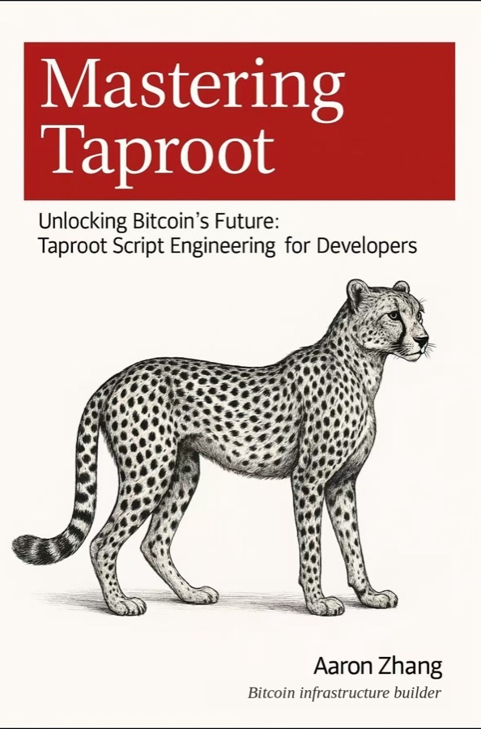

Bitcoin from Scratch
Build your own Bitcoin chain, from a single byte to a working network. Standard library only, so you write every piece yourself.
Books, research and tools for learning and building Bitcoin, made by Aaron Zhang.
Every idea comes as code you can run.
I rebuild Bitcoin piece by piece until I understand it. Everything here is what that work leaves behind. — Aaron Zhang
Every chapter is a notebook. Read it, run it, change a line and see what breaks.
Build your own Bitcoin chain, from a single byte to a working network. Standard library only, so you write every piece yourself.

Taproot script engineering for developers: keys and addresses, P2SH, SegWit, then real Taproot contracts and script trees, verified on testnet.
Frontier mechanisms made visible: small books, Feynman-style, with the experiments behind them.
Hard mechanisms explained Feynman-style, from one question up: can a coin carry rules about where it goes next? Volume I asks what a signature can see. Volume II asks where Bitcoin can grow new rules.
Sighash from the ground up, with a playground where you flip the flags and watch what a signature commits to.
Bitcoin's reserved upgrade slots at the byte level: which one CAT, CSFS, CTV and APO plug into, on real signet bytes.
A reproducible engineering history of every technique for embedding data in Bitcoin, with testnet implementations.
Papers from research at Bitcoin's protocol frontier, with code and on-chain evidence.
Three on-chain demonstrations, and an observation for discussion.
Open problems posed by other builders, answered in working code.
An independent BIP-118 signer, cross-validated by Inquisition's consensus code: one APO signature spends two coins without re-signing. Then a three-round eltoo state chain built on it, settled with CTV.
A new tapscript construction: one signature passes both CSFS and CHECKSIG, so the script can read sha_prevouts and demand a specific second UTXO. The input check a BitVM bridge connector needs.
An implementation of Rubin and Rearden's CSFS rekey ladder, attacked in four stages: where joint state binding holds, and the exact condition that breaks it.
An answer, on chain, to Bob McElrath's covenant challenge for Braidpool: each new coinbase joins the pool through a two-input APO update, and only the latest CTV payout can settle.
Articles that take one mechanism apart at a time, collected and searchable.
Every technical article in one place: Taproot, Script, covenant opcodes on signet, grouped into series and searchable.
The libraries and analyzers the books and research are built on.
Author of Mastering Taproot and Bitcoin from Scratch.
Bitcoin Developer, Educator and Investor.